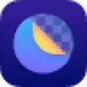
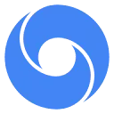
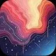
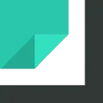
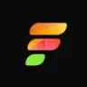

Н
НейрофотоОбработка фото
Нейрофото создаёт портретные изображения по загруженным снимкам человека. Пользователь получает варианты фотографий с деловым либо художественным оформлением исходной внешности.
Обработка фото: Сформулируйте, что нужно изменить и что сохранить. Проверьте лица, надписи и края объектов после обработки.
Отредактируйте снимок для личной страницы, задав небольшой набор конкретных изменений. Укажите, что нужно убрать и что сохранить; сравните результат с оригиналом по контуру лица, фактуре одежды и предметам вокруг, прежде чем публиковать.
Отредактируй мой снимок у окна: убери случайный пакет на полу, сделай свет немного мягче. Сохрани черты лица, рисунок рубашки, положение рук и предметы на подоконнике.
Нейрофото создаёт портретные изображения по загруженным снимкам человека. Пользователь получает варианты фотографий с деловым либо художественным оформлением исходной внешности.
AUTOMATIC1111 WebUI даёт интерфейс для работы с открытыми моделями. Позволяет управлять параметрами генерации и расширять рабочее окружение дополнительными модулями.
Azure AI Vision предоставляет компоненты компьютерного зрения для приложений. Основная работа состоит в передаче изображения и обработке полученных признаков или распознанных сведений.
Hypic предлагает обработку фотографий на телефоне с применением ИИ. Инструменты охватывают портретную ретушь, стилизацию снимка и увеличение изображения.
ImagineArt используют, чтобы собирать видеосцену по описанию или визуальному исходнику. Ещё одно направление работы: менять фотографии с учётом выбранного оформления.
InvokeAI организует работу с открытыми генеративными моделями в графической среде. Холст и слои позволяют отдельно редактировать выбранные участки изображения.

StarryAI создаёт изображения из текстового описания с участием ИИ. Пользователь задаёт замысел словами и настраивает полученный визуальный вариант. Приложение представлено для мобильных устройств на iOS и Android, позволяя работать над художественным изображением в выбранной среде своего телефона.
VistaCreate сочетает оформление макетов по шаблонам с инструментами ИИ. Доступны генерация визуального материала и обработка фона либо предметов на изображении.

AIPassportPhotos подготавливает фотографии для паспортов и других документов, меняя размер и цвет фона. Также предусмотрена проверка соответствия требованиям снимка. Дополнительные операции включают цветокоррекцию, восстановление и раскрашивание, объединяя оформление фотографии с редактированием исходного фотографического изображения пользователя.
Google Whisk используют, чтобы получать изображения из словесного задания. Ещё одно направление работы: менять фотографии с учётом выбранного оформления.
В инструменте «Magic Studio» можно получать изображения из словесного задания. Ещё одно направление работы: менять фотографии с учётом выбранного оформления.
PhotoLab преобразует портрет с помощью готовых эффектов и шаблонов. Приложение позволяет подготовить художественное изображение лица либо собрать коллаж из снимков.
Vue.ai помогает магазинам готовить товарные карточки и теги, использовать модели и персонализировать витрину. Платформа предназначена для корпоративной работы с ассортиментом.

Wondershare PixCut используют для задачи: менять фотографии с учётом выбранного оформления. Ещё одно направление работы: отделять объект на снимке от окружения.
Zmo.ai показывает одежду на виртуальных моделях с помощью генерации изображений. Сервис позволяет подготовить визуальные материалы товара без отдельной съёмки человека.
Bazaart помогает создавать коллажи и работать со слоями. Приложение вырезает объекты и генерирует фон для фотографий товаров.
Bria AI предназначена для работы с изображениями и использует модель, обученную на лицензированных материалах. Решение ориентировано на задачи брендов.
Doji создаёт аватар по фотографии и показывает на нём одежду из интернет-магазинов. Приложение помогает выполнять виртуальную примерку вещей.

Nano Banana (Google) используют для задачи: менять фотографии с учётом выбранного оформления. Ещё одно направление работы: получать изображения из словесного задания.
rembg предоставляет локальную обработку изображений для отделения объекта от фона. Библиотека поддерживает работу с несколькими файлами в пакетном режиме.
Slazzer отделяет объект фотографии от окружающего фона. Сервис предусматривает расширения для Photoshop и способы подключения обработки к работе интернет-магазина.
Wondershare AILab используют, чтобы собирать видеосцену по описанию или визуальному исходнику. Ещё одно направление работы: менять фотографии с учётом выбранного оформления.
Photoroom предназначен для доработки фотографий, в том числе товарного материала. При изменении окружения важно сохранить свойства самого объекта.
Reve генерирует картинки по текстовому описанию. Инструмент позволяет создавать визуальные материалы и работать с задачами, требующими реалистичной подачи.

ArtAny.ai используют для задачи: менять фотографии с учётом выбранного оформления. Ещё одно направление работы: получать изображения из словесного задания.

Imagga используют, чтобы собирать видеосцену по описанию или визуальному исходнику. Ещё одно направление работы: исследовать тему и разбирать найденную информацию.
В инструменте «Reve Image» можно получать изображения из словесного задания. Ещё одно направление работы: менять фотографии с учётом выбранного оформления.
USO изменяет существующие фотографии по текстовому заданию. Инструмент позволяет описать нужную обработку и получить переработанную версию исходного изображения.
BetterPic предназначен для создания портретного материала по фотографиям. При отборе важны естественные черты лица и соответствие снимка тому месту, где он будет опубликован.
В инструменте «insMind» можно собирать видеосцену по описанию или визуальному исходнику. Ещё одно направление работы: менять фотографии с учётом выбранного оформления.
YouCam Perfect обрабатывает селфи в мобильном приложении. Инструменты позволяют корректировать кожу, макияж и фигуру, а также применять фильтры во время съёмки.

BestFaceSwap рассчитан на задачи, где нужно переносить образ лица на изображение или видеокадр. Ещё одно направление работы: менять фотографии с учётом выбранного оформления.
Fotor GoArt применяет художественное оформление к фотографии внутри Fotor. Вместо обычного снимка получается изображение с выбранной манерой рисунка.
Hives AI сочетает создание изображений с обработкой готовых картинок в браузере. Доступны увеличение, изменение художественного оформления и отделение объекта от фона.
OpenArt предоставляет ИИ-инструменты для создания изображений и их дальнейшего изменения. Продукт ориентирован в том числе на художественные ресурсы, которые автор может редактировать. Генерация и обработка объединены, чтобы пользователь продолжал работу над выбранным визуальным материалом в пределах инструмента.
ReimagineHome используют, чтобы искать решения для пространства. Ещё одно направление работы: менять фотографии с учётом выбранного оформления.
Styldod рассчитан на задачи, где нужно менять фотографии с учётом выбранного оформления. Ещё одно направление работы: работать с информацией о недвижимости.
В инструменте «Toonify» можно менять фотографии с учётом выбранного оформления. Ещё одно направление работы: получать изображения из словесного задания.
VSCO объединяет цветокоррекцию фотографии с пресетами плёночного оформления. Для правки снимков также предусмотрены инструменты ретуши с использованием ИИ.
Страница 2 из 2